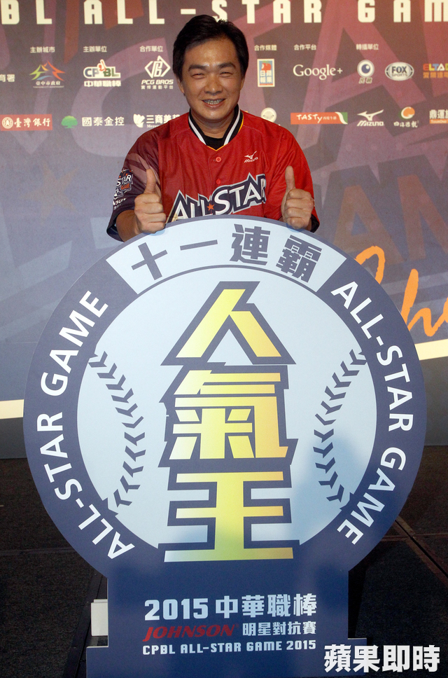
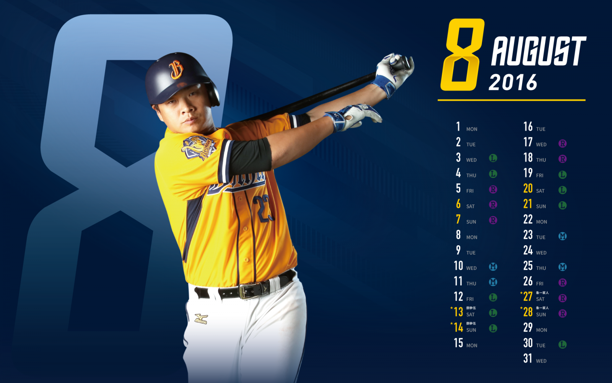
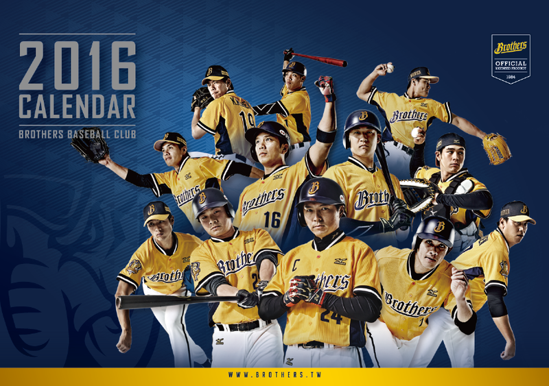
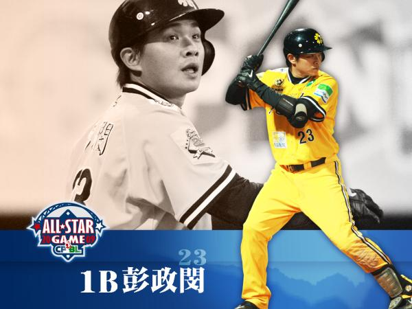
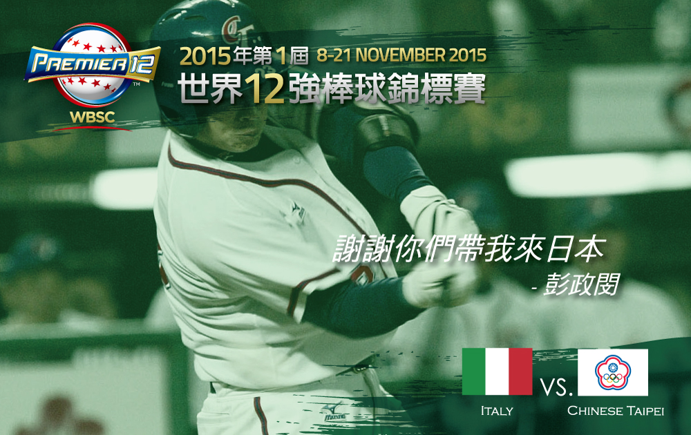
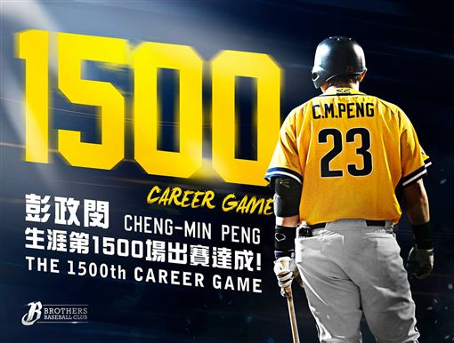

主題-中信兄弟象-彭政閔 | |||||
|



 中信兄弟官方網站 中華職棒 彭政閔口號: 喔～喔喔喔喔～喔喔喔 喔喔喔喔～喔喔喔 喔～喔喔喔喔～喔喔喔 喔喔喔喔～喔喔喔 （彭政閔音樂） 彭政閔！彭政閔！安打全壘打彭政閔！ （彭政閔音樂） 彭政閔！彭政閔！安打全壘打彭政閔！ （彭政閔音樂） 彭政閔！彭政閔！安打全壘打彭政閔！ （彭政閔音樂） 啦:彭政閔！迷:全壘打！ 啦:彭政閔！迷:全壘打！ 啦:彭！政！閔！ 迷:全！壘！打！ |
彭政閔的介紹綽號:恰恰(火星人)


| ||||
|
彭政閔 中信兄弟的精神領袖 | |||||